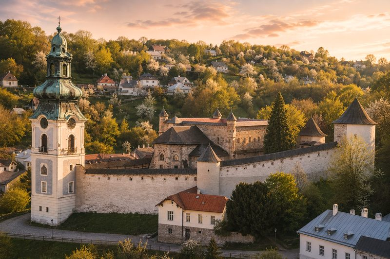

Hrad
Starý zámok
Najcennejšia historická pamiatka mesta, ktorá vznikla prestavbou románskeho kostola z 13. storočia na mestský hrad. Najväčšou premenou prešla v 16. storočí počas tureckého nebezpečenstva, keď pribudli obranné múry, bašty a strážne veže. Dnes tu sídli Slovenské banské múzeum s expozíciami od kováčskej dielne až po autentickú mučiareň.